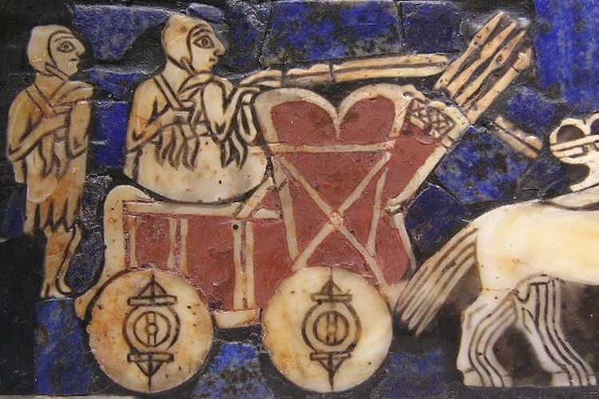
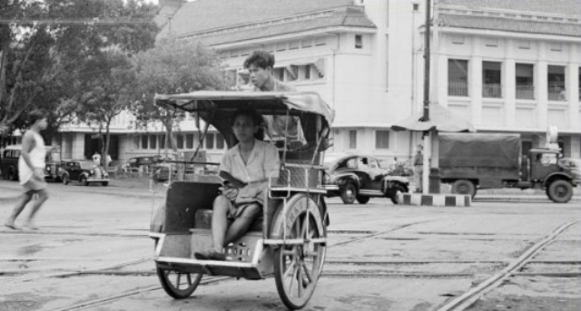
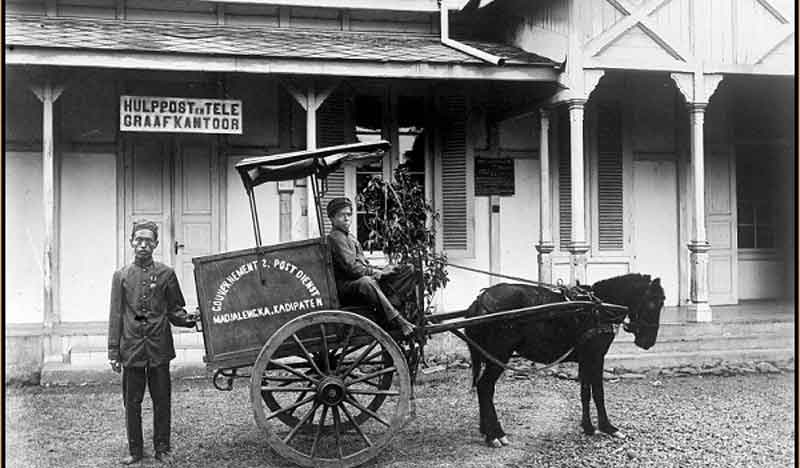
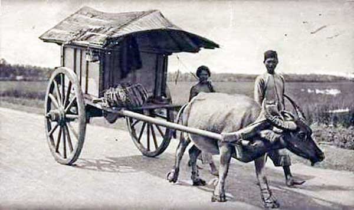
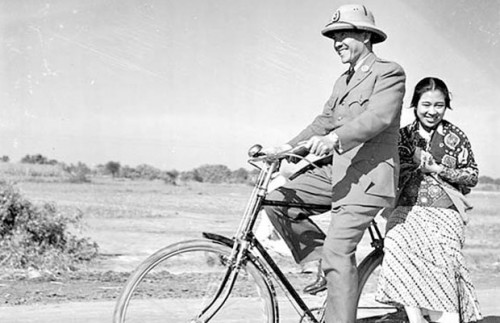

"Transportation in Ancient Times"
Transportasi di Zaman Dahulu
Sebelum teknologi transportasi secanggih sekarang, orang-orang
pada zaman dahulu melakukan perjalanan dengan berjalan kaki atau menunggangi kuda. Baik
perjalanan dekat ataupun jauh, orang-orang zaman dulu terbiasa melakukan perjalanan dengan
berjalan kaki. Sedangkan, untuk menunggangi kuda mungkin tidak semua orang bisa melakukannya.
Dilansir dari Kompas.com, Transportasi berarti sarana pengangkut yang berfungsi untuk
memudahkan perpindahan manusia maupun barang dari satu tempat ke tempat yang lain.
Sejarah Perkembangan transportasi di dunia dimulai sejak ditemukannya
roda pada sekitar tahun 3500 SM. Penemuan roda sendiri pertama kali ditemukan oleh bangsa
Sumeria. Dibuktikan dengan penemuan relief di kuil peninggalan bangsa Sumeria. Di mana relief
ini menggambarkan orang yang sedang menaiki kereta beroda.

Klik pada gambar untuk info selengkapnya
Pada saat itu, roda masih terbuat dari kayu yang memiliki beban yang berat dan biasa digunakan untuk
menggulirkan kereda kuda atau kereta perang. Penemuan roda ini, berdampak baik pada Perkembangan
transportasi. Sehingga dapat memudahkan orang-orang untuk melakukan perjalanan jauh. Selain itu,
dilansir dari detik.com ada juga 4 contoh kendaraan tradisional di Indonesia yang sudah ada sejak zaman
kerajaan hingga penjajahan diantaranya:
- Becak
merupakan moda transportasi tradisional yang masih sering kita temui hingga kini dan tentunya
sudah tidak asing lagi di Indonesia. Becak tidak hanya ada di Pulau Jawa tetapi terdapat di beberapa
daerah di Indonesia bahkan luar negeri. Becak (betjak) berasal dari Tiongkok yang berarti kuda
gerobak atau kereta kuda. Tetapi, becak sendiri digerakkan oleh tenaga manusia dengan cara digowes
atau di dorong. Di Indonesia terdapat dua jenis becak yakni becak dengan pengemudi belakang dan becak
dengan pengemudi samping. Becak dengan pengemudi di belakang umumnya banyak ditemukan di Pulau Jawa
sedangkan becak dengan pengemudi di samping umumnya terdapat di Pulau Sumatera.

- Delman
atau kereta kuda merupakan alat transportasi tradisional yang menggunakan roda berjumlah dua
sampai empat roda yang ditarik menggunakan tenaga kuda. Delman pertama kali ditemukan oleh seorang
insinyur pada masa Hindia Belanda yang bernama Charles Theodore Deeleman. Oleh
karena itu, alat transportasi ini diberi nama 'Delman', seperti nama dari sang penemu. Pada masa
penjajahan Belanda, delman merupakan alat transportasi antar kota sebelum kereta dan trem masuk ke
Indonesia. Jumlah kuda sebagai penarik delman ini bervariasi dari satu sampai dua kuda. Selain itu,
delman juga dikenal sering digunakan oleh para bangsawan pada masa itu.

- Pedati (Gerobak),
alat transportasi tradisional ini memiliki satu sampai empat buah roda yang terbuat dari kayu dan
bagian atapnya terbuat dari anyaman bambu ataupun bahan lain yang berfungsi untuk melindungi penumpang
atau barang yang diangkut. Beberapa gerobak digunakan sebagai alat angkut barang yang ditarik oleh
manusia dan dibuat tanpa menggunakan atap. Gerobak juga dapat ditarik oleh hewan seperti sapi atau kerbau.

- Sepeda Onthel
juga dikenal dengan sebutan sepeda unta atau sepeda kebo, sepeda jengki, kumbang, sundung,
sepeda baheula, dan masih banyak julukan yang diberikan oleh masyarakat Indonesia pada sepeda lawas/kuno ini.
Kata jengki berasal dari kata jingke (bahasa Betawi, artinya berjinjit), jadi ketika naik kita harus
berjingke karena tinggi, sedangkan kata onthel berasal dari bahasa Jawa artinya dikayuh karena untuk
menggerakkannya perlu dikayuh.

Untuk informasi selengkapnya, klik link berikut ini